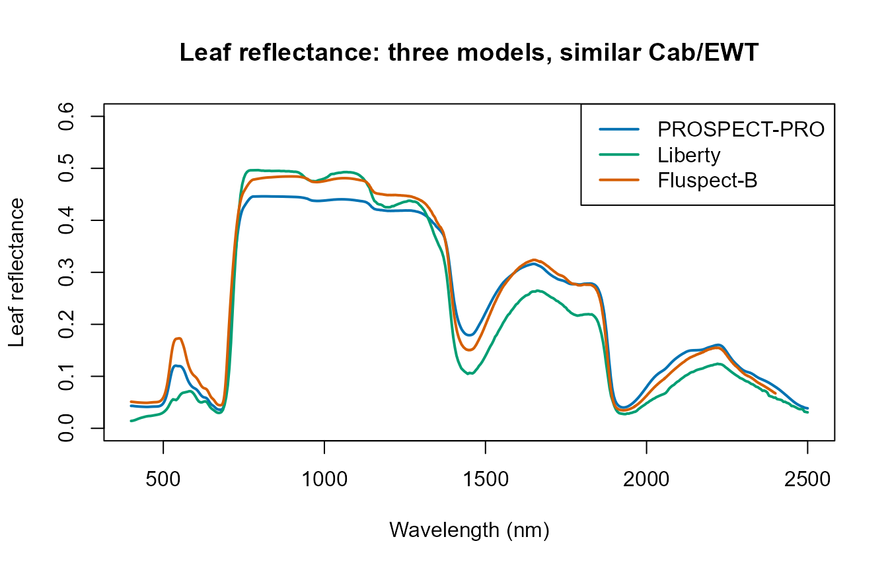
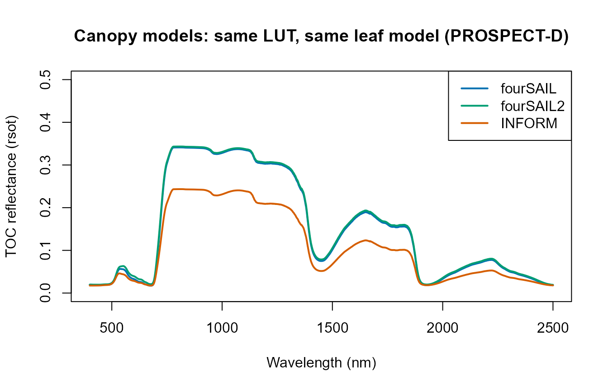
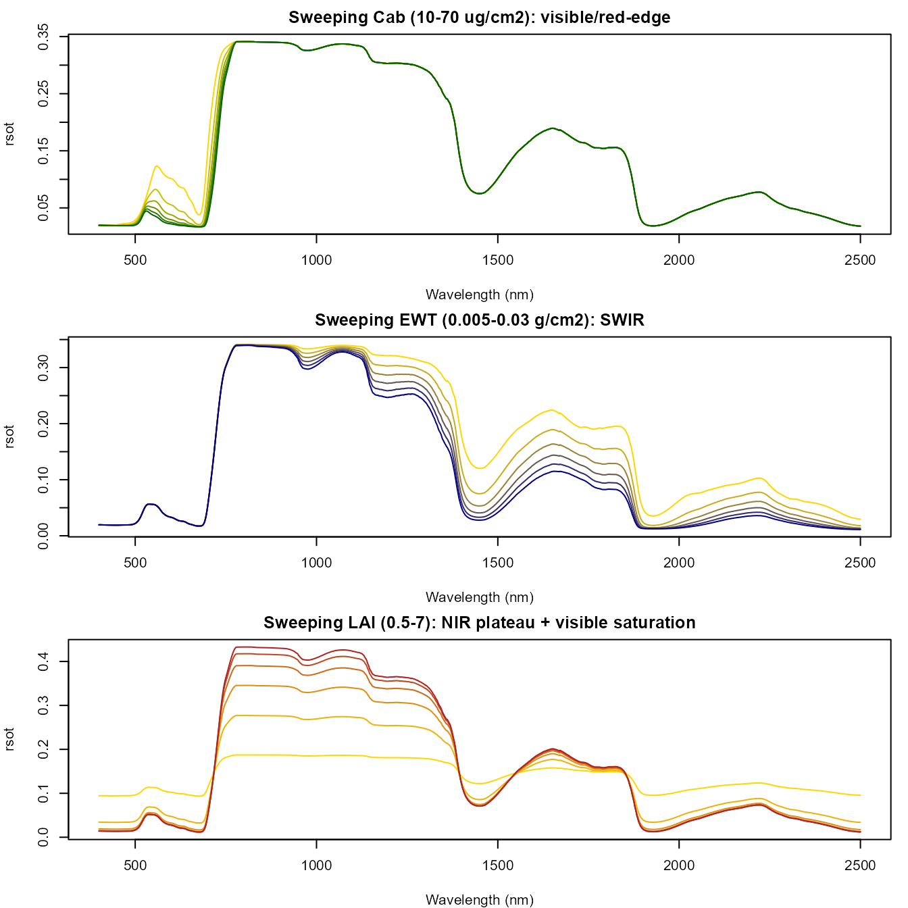

02. From Leaf to Canopy Reflectance
02-leaf-to-canopy.Rmd
library(ToolsRTM)Tutorial 01 ran ONE leaf model through ONE canopy model. This page opens both boxes: every leaf model this package implements, every canopy model, and how a trait change at the leaf level propagates to a change at the canopy level.
Leaf biochemical/structural parameters
|
v
Leaf RTM
|
v
Reflectance (rho)
Transmittance (tau)
Leaf rho / tau
+
Canopy structure
+
Sun-view geometry
|
v
Canopy RTM
|
v
Top-of-canopy BRF1. Leaf radiative transfer: five models, called standalone
ToolsRTM implements five leaf models. Three are exported
as standalone functions (leaf-level only, no canopy);
PROSPECT-D is only available bundled inside a canopy call
(foursail(..., LeafModel = "PROSPECT-D"), Section 2 below)
– a real asymmetry in the package’s exported API worth knowing rather
than guessing past.
| Model | Standalone call | Spectral domain | What it adds over PROSPECT-D |
|---|---|---|---|
prospect_PRO() |
prospect_PRO(N, Cab, Car, Anth, Cbrown, EWT, LMA, alpha, Prot, CBC) |
400-2500nm | Splits dry matter into Prot (protein) +
CBC (carbon-based constituents) instead of one
LMA
|
liberty(inputLUT) |
one-row data.frame in, list out |
400-2500nm (nwl=420 internally, returned at 2101 points
same as PROSPECT) |
Built for conifer needles, not broadleaf – cell diameter, intercellular air space, lignin/cellulose |
getFluspect.B(inputsLeaf, inputsOptipar, version) |
one-row data.frame in |
400-2400nm (2001 points – shorter than PROSPECT’s 2101) | Adds fluorescence emission matrices
(MbI/MbII), needed for SIF |
getFluspect.Cx(inputsLeaf, inputsOptipar) |
one-row data.frame in |
400-2400nm | Fluspect-B plus a Cx (zeaxanthin/violaxanthin) term |
| PROSPECT-D | only via foursail(..., LeafModel = "PROSPECT-D")
|
400-2500nm | The reference; standalone leaf-only call not exported |
pro <- prospect_PRO(N = 1.5, Cab = 40, Car = 8, Anth = 2, Cbrown = 0,
EWT = 0.009, LMA = 0.009, alpha = 40, Prot = 0.002, CBC = 0.007)
lib_row <- data.frame(Cab = 40, EWT = 0.009, lign.cell = 2, Nitrogen = 1,
cell.d = 40, inter.c = 0.045, baseline.abs = 0.0006,
leaf.thick = 1.6, albino.abs = 0)
lib <- liberty(lib_row)
flu_row <- data.frame(N = 1.8, Cab = 40, Car = 10, Anth = 0, EWT = 0.015,
LMA = 0.01, Cs = 0.1, fqe = 0.01, Cx = 0, alpha = 40)
flu <- getFluspect.B(inputsLeaf = flu_row, inputsOptipar = ToolsRTM::optipar, version = "D")
plot(pro$lambda, pro$refl, type = "l", col = "#0072B2", lwd = 2, ylim = c(0, 0.6),
xlab = "Wavelength (nm)", ylab = "Leaf reflectance",
main = "Leaf reflectance: three models, similar Cab/EWT")
lines(lib$lambda, lib$refl, col = "#009E73", lwd = 2)
lines(flu$lambda, flu$refl, col = "#D55E00", lwd = 2)
legend("topright", c("PROSPECT-PRO", "Liberty", "Fluspect-B"),
col = c("#0072B2", "#009E73", "#D55E00"), lwd = 2)
Liberty (built for needle leaves) reads visibly different from the two broadleaf-oriented models even at comparable Cab/EWT – a real structural difference, not a bug, since needle vs. broadleaf internal structure is what the model represents.
2. Canopy radiative transfer: three models
fourSAIL, fourSAIL2, and
INFORM all take the same kind of leaf
reflectance/transmittance and turn it into a canopy-level BRF, but
differ in what canopy structure they represent – and, correspondingly,
in what extra parameters the LUT needs:
| Model | Canopy representation | Extra parameters (beyond LAI/LIDFa/hotspot/geometry) |
foursail()-family call |
Return |
|---|---|---|---|---|
foursail() |
Single-layer turbid medium (classic PROSAIL) | none | foursail(inputLUT, rsoil, LeafModel) |
list(rdot=, rsot=, ...) |
foursail2() |
Two-layer canopy (green + brown/senescent) |
fraction_brown, diss, Cv,
Zeta
|
foursail2(inputLUT, rsoil, LeafModel) |
list(rdot=, rsot=, ...) |
inform() |
Forest: explicit tree crowns over an understory + background |
LAIu, sd (stem density), cd
(crown diameter), h (tree height), skyl
|
inform(inputLUT, rsoil, LeafModel) |
rsot directly (a plain numeric vector, not a list) |
inform()’s return shape (a bare vector, not a
list(rdot=, rsot=)) is a real, useful-to-know inconsistency
across the three canopy functions – simulate_RTM() (used in
later tutorials) normalizes this away, but the raw functions used
directly here do not.
common_lut <- data.frame(
N = 1.5, Cab = 40, Car = 8, Anth = 1, Cbrown = 0, EWT = 0.01, LMA = 0.009, alpha = 40,
Prot = 0.002, CBC = 0.007, Cs = 0, fqe = 0.01, Cx = 0,
cell.d = 40, inter.c = 0.045, baseline.abs = 0.0006, leaf.thick = 1.6,
albino.abs = 0, lign.cell = 2, Nitrogen = 1,
LIDFa = -0.35, LIDFb = -0.15, TypeLidf = 1, LAI = 3, hspot = 0.01,
tts = 30, tto = 0, psi = 0,
fraction_brown = 0.1, diss = 0.5, Cv = 1, Zeta = 0,
LAIu = 0.5, sd = 650, cd = 4.5, h = 20, skyl = 0.1
)
rsoil <- rep(0.15, 2101)
wl <- 400:2500
sim_foursail <- foursail(inputLUT = common_lut, rsoil = rsoil, LeafModel = "PROSPECT-D")$rsot
sim_foursail2 <- foursail2(inputLUT = common_lut, rsoil = rsoil, LeafModel = "PROSPECT-D")$rsot
sim_inform <- inform(inputLUT = common_lut, rsoil = rsoil, LeafModel = "PROSPECT-D") # bare vector
plot(wl, sim_foursail, type = "l", col = "#0072B2", lwd = 2, ylim = c(0, 0.5),
xlab = "Wavelength (nm)", ylab = "TOC reflectance (rsot)",
main = "Canopy models: same LUT, same leaf model (PROSPECT-D)")
lines(wl, sim_foursail2, col = "#009E73", lwd = 2)
lines(wl, sim_inform, col = "#D55E00", lwd = 2)
legend("topright", c("fourSAIL", "fourSAIL2", "INFORM"),
col = c("#0072B2", "#009E73", "#D55E00"), lwd = 2)
INFORM’s forest-level reflectance sits visibly lower than fourSAIL’s – expected, since INFORM’s explicit crown/shadow geometry isn’t present in fourSAIL’s turbid-medium assumption. Tutorial 04 makes this comparison systematic (all 5 leaf models x all 3 canopy models, plus an agreement/RMSE table); this page is about the mechanism, not the survey.
3. How trait changes propagate: leaf sweeps that reach the canopy
Sweep Cab and EWT one at a time (everything
else fixed) and watch the canopy-level spectrum respond – the
leaf-to-canopy chain preserves each trait’s own spectral signature, just
attenuated/reshaped by the canopy:
sweep_trait <- function(trait, values) {
sapply(values, function(v) {
row2 <- common_lut; row2[[trait]] <- v
foursail(inputLUT = row2, rsoil = rsoil, LeafModel = "PROSPECT-D")$rsot
})
}
cab_curves <- sweep_trait("Cab", seq(10, 70, length.out = 6))
ewt_curves <- sweep_trait("EWT", seq(0.005, 0.03, length.out = 6))
lai_curves <- sweep_trait("LAI", seq(0.5, 7, length.out = 6))
op <- par(mfrow = c(3, 1), mar = c(4, 4, 2, 1))
matplot(wl, cab_curves, type = "l", lty = 1, col = colorRampPalette(c("gold", "darkgreen"))(6),
xlab = "Wavelength (nm)", ylab = "rsot", main = "Sweeping Cab (10-70 ug/cm2): visible/red-edge")
matplot(wl, ewt_curves, type = "l", lty = 1, col = colorRampPalette(c("gold", "darkblue"))(6),
xlab = "Wavelength (nm)", ylab = "rsot", main = "Sweeping EWT (0.005-0.03 g/cm2): SWIR")
matplot(wl, lai_curves, type = "l", lty = 1, col = colorRampPalette(c("gold", "firebrick"))(6),
xlab = "Wavelength (nm)", ylab = "rsot", main = "Sweeping LAI (0.5-7): NIR plateau + visible saturation")
par(op)Each trait leaves its signature in a different spectral region –
Cab in the visible/red-edge (chlorophyll absorption),
EWT in the SWIR (water absorption), LAI mainly
in the NIR plateau height (more leaf layers, more multiple scattering)
while the visible saturates quickly once the canopy is closed enough to
hide the soil. Tutorial 10 formalizes this with proper global
sensitivity analysis (Sobol/Johnson indices) rather than
one-trait-at-a-time sweeps.
What’s next
- Tutorial 03 – SPART: when TOC reflectance (this page’s output) isn’t enough and the full soil-plant-atmosphere chain to top-of-atmosphere is needed instead.
- Tutorial 04 – the full leaf x canopy comparison grid, an agreement/RMSE table, and a practical model-selection guide.
-
Tutorial 05 – building a LUT of many trait rows
instead of one fixed
common_lut.